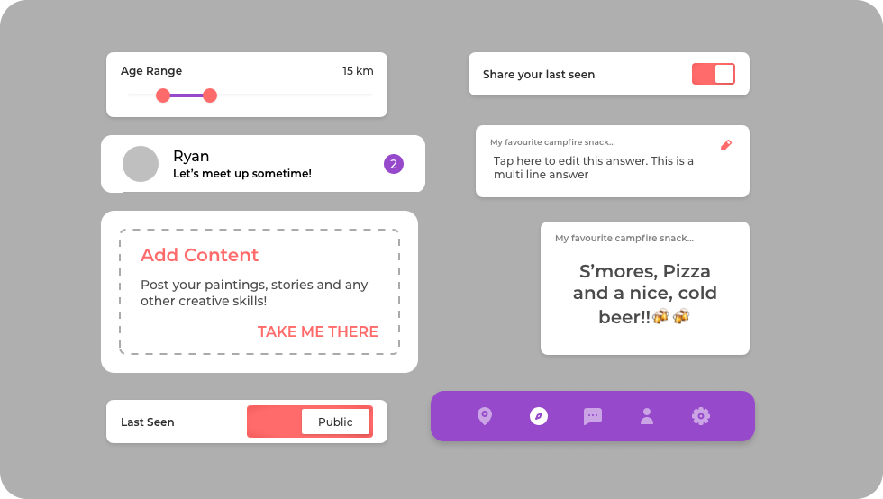

Restaurant Based Matchmaking
Folx
Timeline
1 Month
Project Type
UI Design
Team Size
1 Designer
+ 3 Devs
Industry
Social / Dating
About the Company
Folx, pronounced like folks
About My Role
The folks at Folx had a basic idea about what the app needed to be, and I was called on to develop the concept, create new user flows, streamline the UI design and prototype the experience.
01
Creating the Identity
Folx appeals to people who are looking for meaningful relationships, and tired of one night stands with strangers. Folx is
02
Designing the UI
I went about designing the UI for the app using a systematic building block approach. Working closely with the team, I started by building the most basic elements first, and then building up to larger, more complex pieces.
The Atoms
The building blocks were designed to convey

The Molecules
As I scaled up, I had a lot of fun playing around with the Icebreakers. I saw a lot of potential with randomizing them and motivating users to talk about themselves in a playful and creative way. The switches also have a sharp uniqueness to them that I thought was a nice quirk of the design.
The Organisms
Putting these pieces together was made simple by the approach I had taken and it helped me quickly build the UI without any hassles. The end product was fun, quirky, and playful, reflecting the creative geniuses of the team, and of course, the awesome people who would use the app to find their special someone.

All in all, this was a brisk, enjoyable project that taught me how to collaborate with a closely knit team from afar, quickly becoming a part of the inner circle, and seamlessly integrating with them.